Learning Outcomes
By the end of this lecture, you will be able to:
- Classify quadric surfaces by their equations and visualize them by analyzing traces
- Describe curves in space using both implicit and parametric representations
- Parametrize standard surfaces and curves in \(\mathbb{R}^3\)
- Compute tangent vectors, tangent lines, and tangent planes to parametrized curves and surfaces
- Calculate arc length of space curves using parametrization
- Connect the geometry of quadratic forms to multivariable differentiation and integration
Lecture Scope and Goals
This lecture develops the geometric language needed for the first half of multivariable calculus. The main objects are curves and surfaces in three-dimensional space, especially those given by quadratic equations. Our goals are to:
recognize the most important quadratic curves and quadric surfaces,
learn how to sketch them from equations using traces and level sets,
understand how equations, graphs, and parametrizations describe the same geometric object,
prepare for tangent vectors, partial derivatives, tangent planes, surface area, and multiple integrals.
In multivariable calculus, an equation does not only define numbers. It defines a geometric object. Once we can see the geometry behind the equation, differentiation and integration become much more meaningful.
Points, Curves, and Surfaces in \(\mathbb{R}^3\)
A point in \(\mathbb{R}^3\) has coordinates \[(x,y,z).\] Geometrically, we think of the three coordinates as distances measured along three mutually perpendicular axes.
Curves
A curve in space is usually described in one of two ways:
Implicitly, by the intersection of two surfaces,
Parametrically, by writing each coordinate as a function of a parameter \(t\).
For example, the line through \(P_0=(x_0,y_0,z_0)\) with direction \(\mathbf{v}=\langle a,b,c\rangle\) is \[\mathbf{r}(t)=\langle x_0,y_0,z_0\rangle + t\langle a,b,c\rangle,\] that is, \[x=x_0+at,\qquad y=y_0+bt,\qquad z=z_0+ct.\]
Surfaces
A surface in \(\mathbb{R}^3\) is often given by a single equation \[F(x,y,z)=0\] or, when possible, by a graph \[z=f(x,y).\] Examples:
\(z=x^2+y^2\) is a paraboloid,
\(x^2+y^2+z^2=4\) is a sphere,
\(z=3x-2y+1\) is a plane.
Quadratic Curves in the Plane as Building Blocks
Before studying quadratic surfaces in \(\mathbb{R}^3\), we recall the standard quadratic curves in \(\mathbb{R}^2\). These appear constantly as traces of surfaces.
Circle and Ellipse
The equation \[\frac{x^2}{a^2}+\frac{y^2}{b^2}=1\] defines an ellipse. If \(a=b=r\), this becomes the circle \[x^2+y^2=r^2.\] The intercepts are easy to read: \[(\pm a,0),\qquad (0,\pm b).\]
Parabola
The equation \[y=ax^2\] defines a parabola. The sign of \(a\) determines whether it opens upward or downward.
Hyperbola
The equation \[\frac{x^2}{a^2}-\frac{y^2}{b^2}=1\] defines a hyperbola opening to the left and right, while \[\frac{y^2}{b^2}-\frac{x^2}{a^2}=1\] opens upward and downward.
Most quadric surfaces are recognized by slicing them with planes such as \(x=c\), \(y=c\), or \(z=c\). Each slice gives one of these familiar quadratic curves.
How to Visualize a Surface from Its Equation
Suppose a surface is given by an equation involving \(x\), \(y\), and \(z\). A reliable visualization strategy is:
Identify symmetry: does the equation remain unchanged when \(x\) is replaced by \(-x\), or \(y\) by \(-y\), or \(z\) by \(-z\)?
Find intercepts by setting two variables equal to zero.
Compute traces in coordinate planes: \[z=0,\qquad x=0,\qquad y=0.\]
Compute level curves or horizontal slices by setting \(z=c\).
Compare the resulting curves with standard conics.
Example: \(z=x^2+y^2\)
To sketch the surface \[z=x^2+y^2,\] we examine its traces:
In the plane \(y=0\), we get \(z=x^2\), a parabola.
In the plane \(x=0\), we get \(z=y^2\), another parabola.
In the horizontal plane \(z=c\), we get \[x^2+y^2=c,\] which is a circle of radius \(\sqrt{c}\) when \(c\ge 0\).
Therefore the surface is an elliptic paraboloid, opening upward.
Elliptic paraboloid
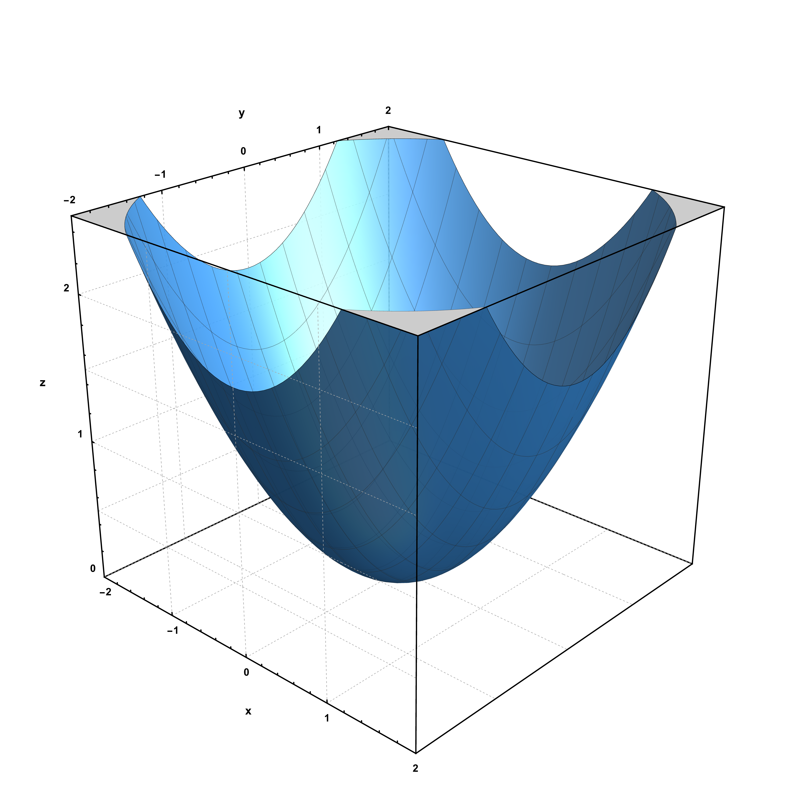
Horizontal circles widen as \(z\) increases
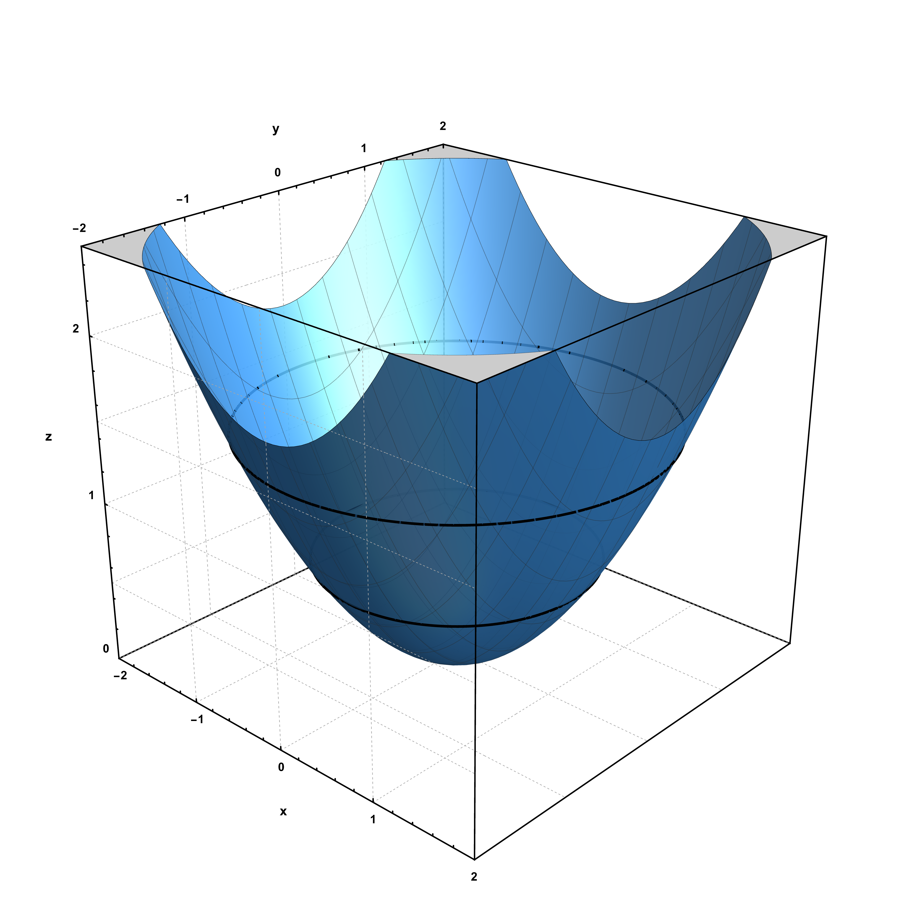
Example: \(z=x^2-y^2\)
For \[z=x^2-y^2,\] the traces are different in different directions:
if \(y=0\), then \(z=x^2\), an upward parabola,
if \(x=0\), then \(z=-y^2\), a downward parabola,
if \(z=c\), then \(x^2-y^2=c\), a hyperbola.
This is the hyperbolic paraboloid, often called a saddle surface.
Hyperbolic paraboloid
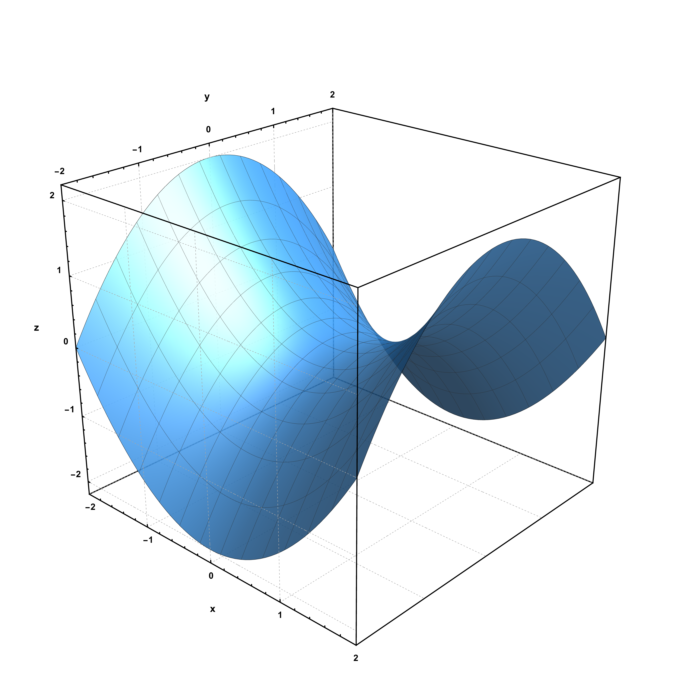
Opposite curvatures produce a saddle
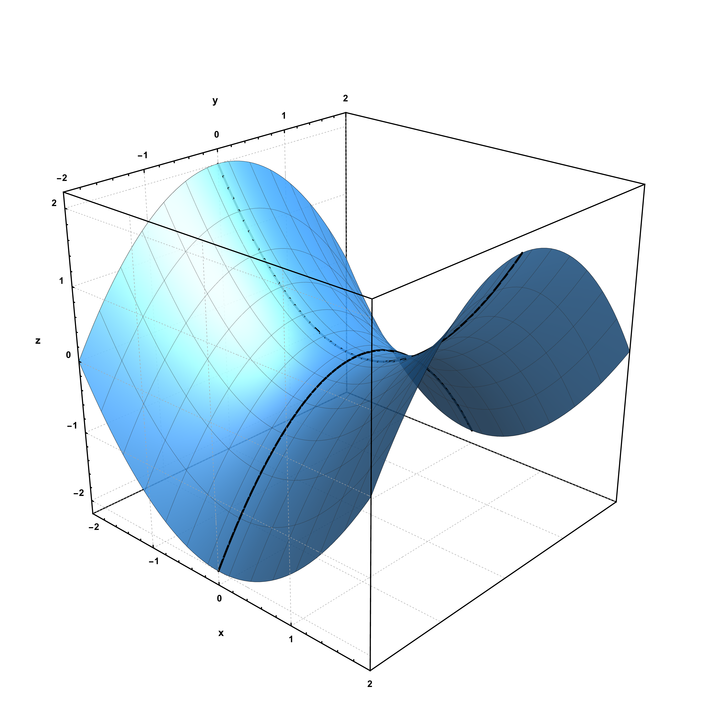
The Standard Quadric Surfaces
Quadric surfaces are surfaces defined by second-degree equations in \(x\), \(y\), and \(z\). After translation and scaling, the standard forms below appear repeatedly.
Ellipsoid
\[\frac{x^2}{a^2}+\frac{y^2}{b^2}+\frac{z^2}{c^2}=1.\] This is a closed surface centered at the origin. Its intercepts are \[(\pm a,0,0),\qquad (0,\pm b,0),\qquad (0,\pm c,0).\] If \(a=b=c=r\), then the ellipsoid becomes the sphere \[x^2+y^2+z^2=r^2.\]
Elliptic Paraboloid
\[z=\frac{x^2}{a^2}+\frac{y^2}{b^2}.\] Horizontal traces \(z=c\) are ellipses, and vertical traces are parabolas. This surface has one vertex and opens in the positive \(z\)-direction.
Hyperbolic Paraboloid
\[z=\frac{x^2}{a^2}-\frac{y^2}{b^2}.\] Horizontal traces are hyperbolas, and vertical traces are parabolas opening in opposite directions.
Elliptic Cone
\[\frac{x^2}{a^2}+\frac{y^2}{b^2}=\frac{z^2}{c^2}.\] For fixed \(z=c_0\neq 0\), the trace is an ellipse. The surface passes through the origin and has two nappes, one above and one below.
Hyperboloid of One Sheet
\[\frac{x^2}{a^2}+\frac{y^2}{b^2}-\frac{z^2}{c^2}=1.\] The minus sign indicates the axis of opening. Horizontal slices are ellipses \[\frac{x^2}{a^2}+\frac{y^2}{b^2}=1+\frac{z^2}{c^2},\] whose size increases as \(\left\lvert z \right\rvert\) increases.
Hyperboloid of Two Sheets
\[\frac{z^2}{c^2}-\frac{x^2}{a^2}-\frac{y^2}{b^2}=1.\] This surface exists only when \(\left\lvert z \right\rvert\ge c\), so it splits into two separate pieces.
Ellipsoid
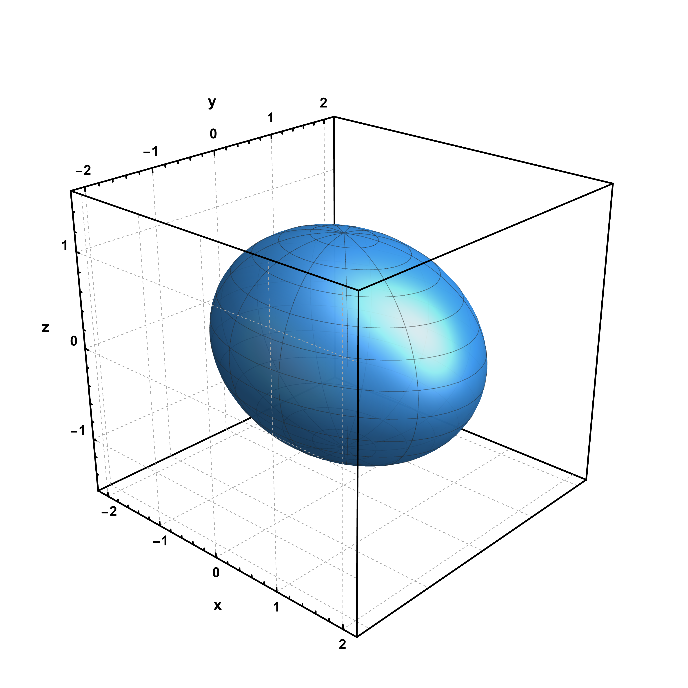
Elliptic cone
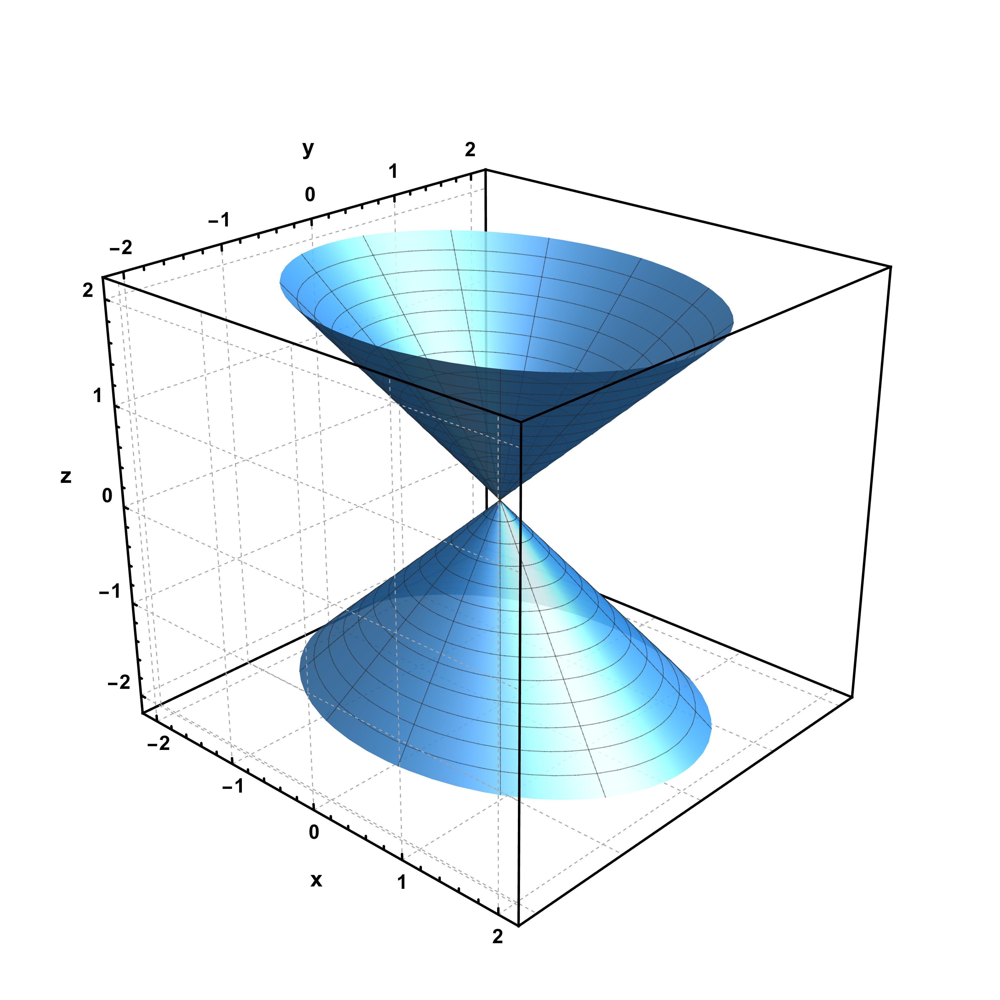
Hyperboloid of one sheet
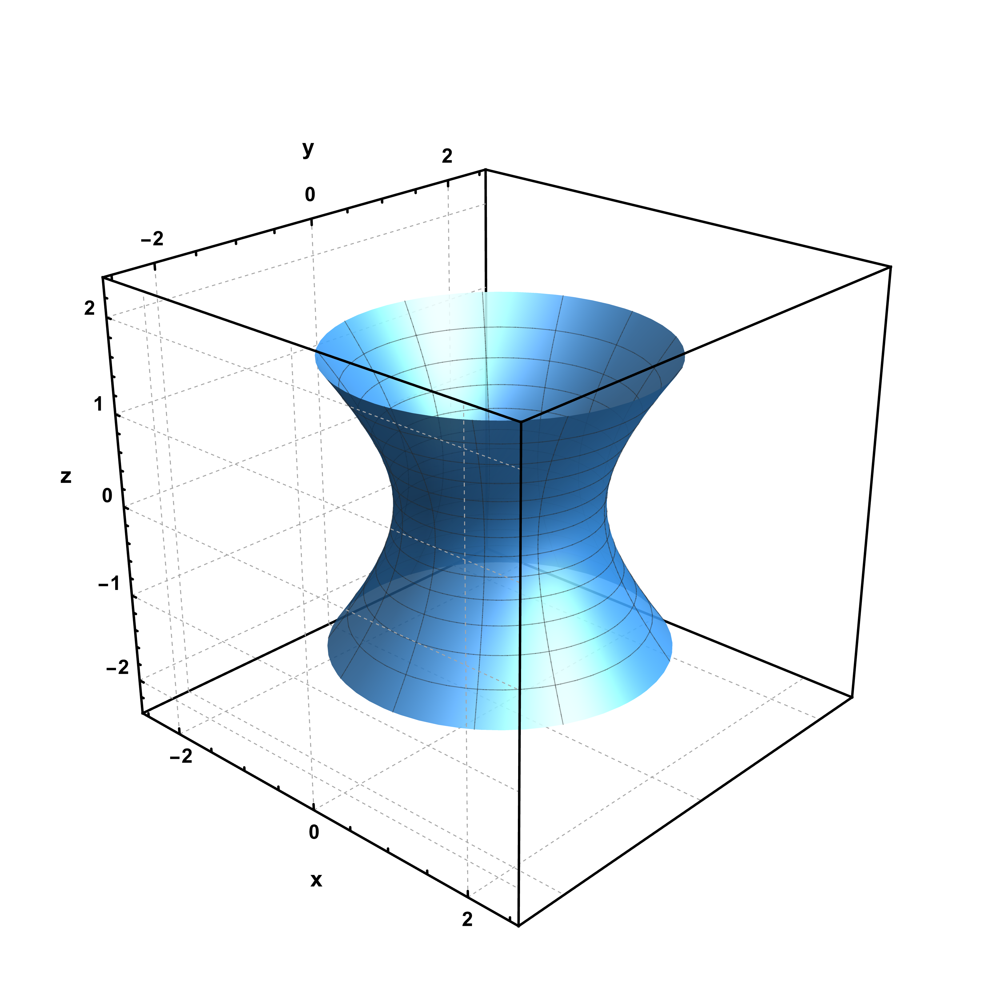
Hyperboloid of two sheets
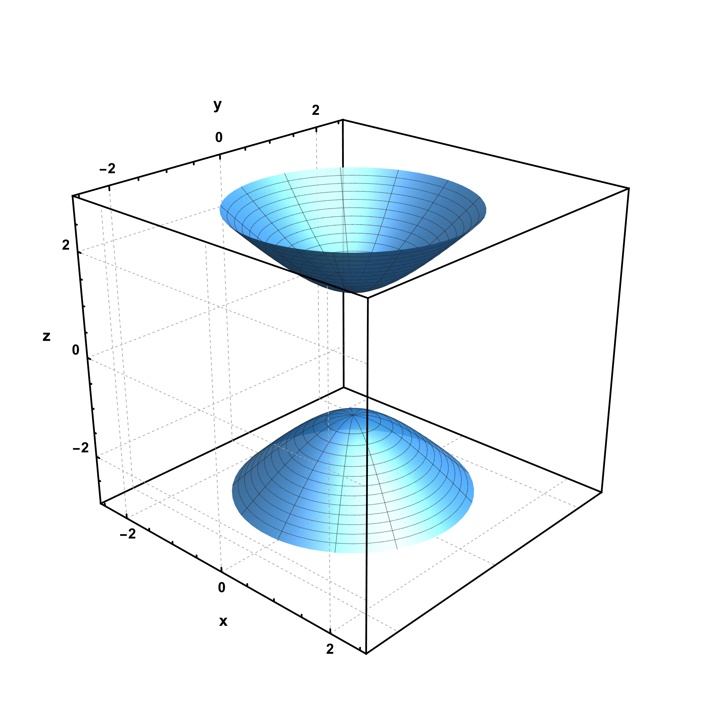
Cylinders
A variable may be missing entirely. For example, \[x^2+y^2=1\] does not involve \(z\), so the circle in the \(xy\)-plane extends parallel to the \(z\)-axis, producing a circular cylinder.
Likewise, \[z=x^2\] does not involve \(y\), so the parabola in the \(xz\)-plane extends parallel to the \(y\)-axis, producing a parabolic cylinder.
Circular cylinder
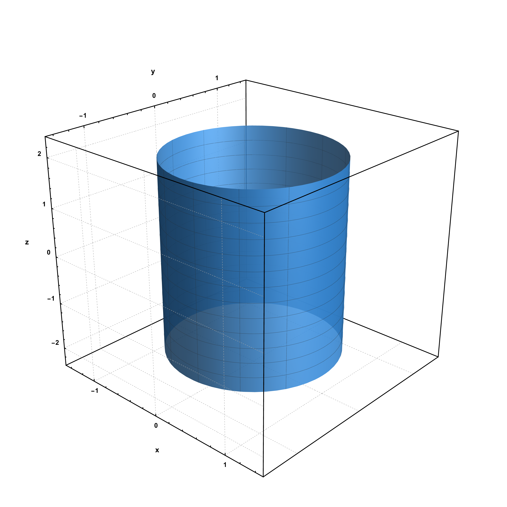
Parabolic cylinder
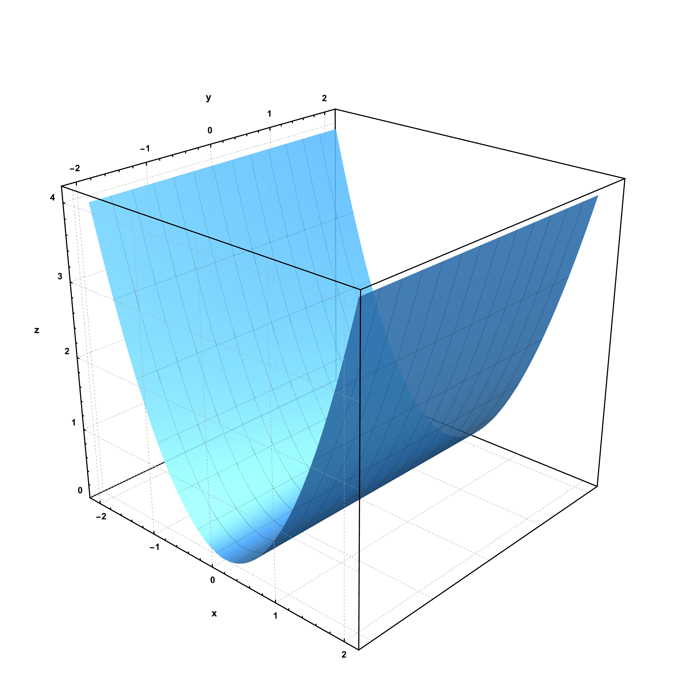
A Practical Recognition Guide
The signs and constant terms in a quadratic equation usually determine the type of surface.
| Standard form | Surface type |
|---|---|
| \(\dfrac{x^2}{a^2}+\dfrac{y^2}{b^2}+\dfrac{z^2}{c^2}=1\) | ellipsoid |
| \(z=\dfrac{x^2}{a^2}+\dfrac{y^2}{b^2}\) | elliptic paraboloid |
| \(z=\dfrac{x^2}{a^2}-\dfrac{y^2}{b^2}\) | hyperbolic paraboloid |
| \(\dfrac{x^2}{a^2}+\dfrac{y^2}{b^2}-\dfrac{z^2}{c^2}=1\) | hyperboloid of one sheet |
| \(\dfrac{z^2}{c^2}-\dfrac{x^2}{a^2}-\dfrac{y^2}{b^2}=1\) | hyperboloid of two sheets |
| \(\dfrac{x^2}{a^2}+\dfrac{y^2}{b^2}=\dfrac{z^2}{c^2}\) | elliptic cone |
If all squared terms have the same sign and the equation equals \(1\), the surface is typically closed. If one squared term has a different sign, expect a hyperbolic shape. If the equation equals a squared variable, expect a cone. If one variable is linear and the others are quadratic, expect a paraboloid.
Parametrizing Curves in \(\mathbb{R}^3\)
A parametrization describes a curve by a vector-valued function \[\mathbf{r}(t)=\langle x(t),y(t),z(t)\rangle.\] This is essential in multivariable calculus because derivatives such as \(\mathbf{r}\,'(t)\) give tangent vectors and velocities.
Lines
The line through \(P_0=(x_0,y_0,z_0)\) with direction \(\mathbf{v}=\langle a,b,c\rangle\) is \[\mathbf{r}(t)=\langle x_0+at,\ y_0+bt,\ z_0+ct\rangle.\]
Circle
The circle of radius \(R\) in the plane \(z=k\) centered at \((0,0,k)\) is \[\mathbf{r}(t)=\langle R\cos t,\ R\sin t,\ k\rangle, \qquad 0\le t\le 2\pi.\]
Ellipse
An ellipse in the plane \(z=k\) is parametrized by \[\mathbf{r}(t)=\langle a\cos t,\ b\sin t,\ k\rangle.\]
A Space Curve Example
Not every curve in \(\mathbb{R}^3\) lies in a plane. A standard example is the helix \[\mathbf{r}(t)=\langle 1.35\cos t,\ 1.35\sin t,\ 0.3t\rangle, \qquad 0\le t\le 4\pi.\] As \(t\) increases, the point rotates around the \(z\)-axis while steadily rising. This is a useful model for springs, screw motion, and periodic motion with vertical drift.
A parametrized curve in three dimensions
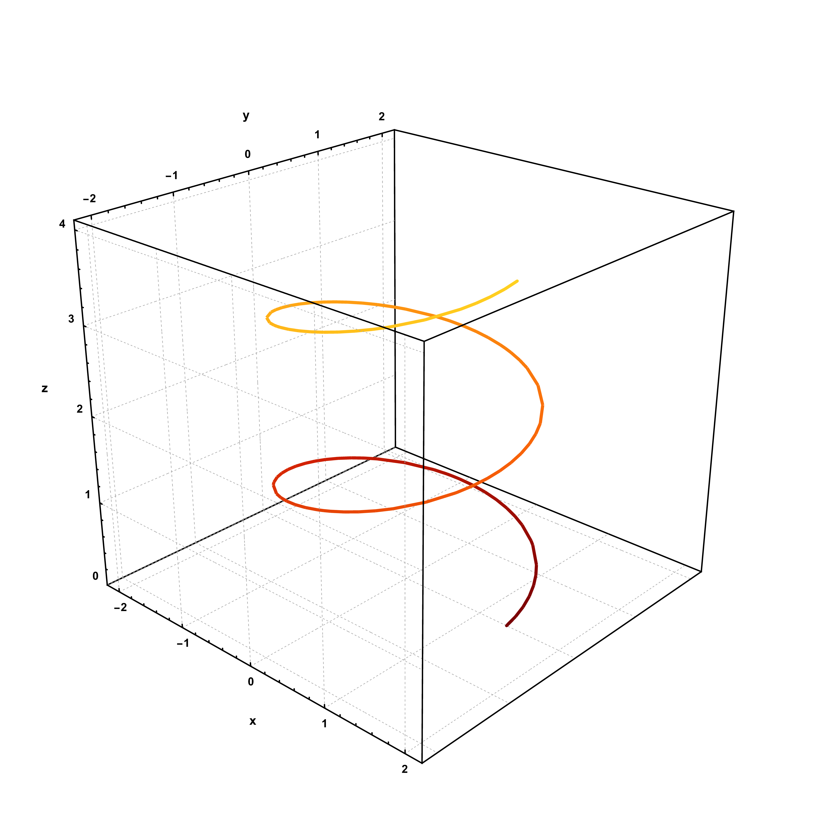
Intersection Curves
Suppose we want to parametrize the curve where the cylinder \[x^2+y^2=4\] meets the plane \[z=x+1.\] We first parametrize the cylinder by \[x=2\cos t,\qquad y=2\sin t.\] Then use the plane equation to obtain \[z=2\cos t+1.\] So a parametrization is \[\mathbf{r}(t)=\langle 2\cos t,\ 2\sin t,\ 2\cos t+1\rangle.\]
A curve as the intersection of two surfaces
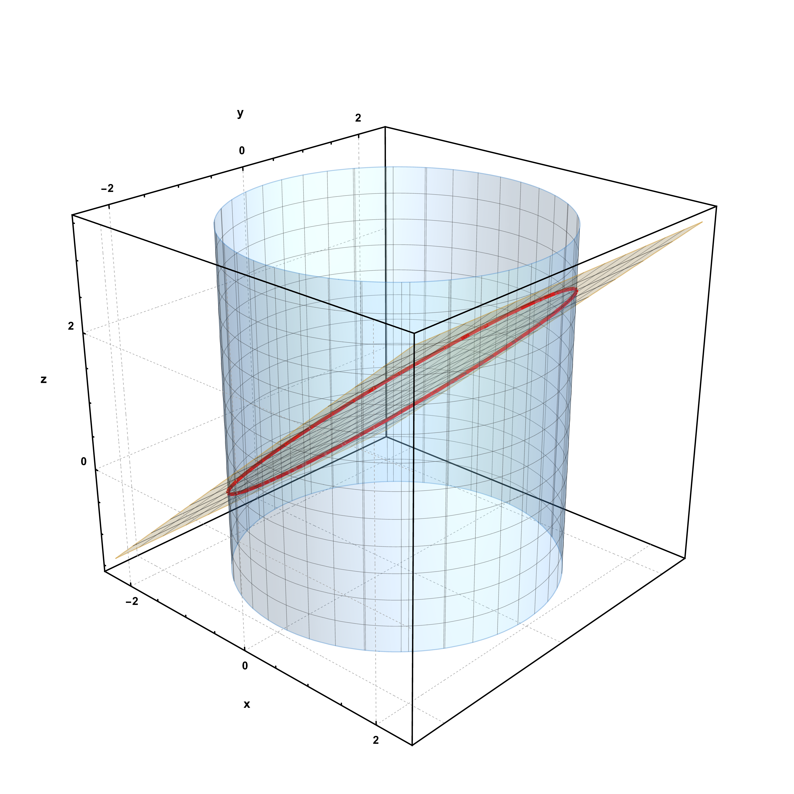
Parametrizing Surfaces
A parametrized surface is described by two parameters: \[\mathbf{r}(u,v)=\langle x(u,v),y(u,v),z(u,v)\rangle.\] This is the natural framework for tangent planes, normal vectors, and surface integrals.
Graphs
If a surface is given as a graph \(z=f(x,y)\), then a standard parametrization is \[\mathbf{r}(u,v)=\langle u,v,f(u,v)\rangle.\]
For example, the paraboloid \(z=x^2+y^2\) can be parametrized by \[\mathbf{r}(u,v)=\langle u,v,u^2+v^2\rangle.\]
Cylinders
The circular cylinder \(x^2+y^2=R^2\) can be parametrized by \[\mathbf{r}(\theta,z)=\langle R\cos\theta, R\sin\theta, z\rangle.\]
Sphere
The sphere of radius \(\rho\) centered at the origin can be parametrized by spherical angles: \[\mathbf{r}(\phi,\theta)=\langle \rho\sin\phi\cos\theta,\ \rho\sin\phi\sin\theta,\ \rho\cos\phi\rangle,\] where \[0\le \phi\le \pi, \qquad 0\le \theta\le 2\pi.\]
Elliptic Paraboloid
An efficient parametrization of \[z=\frac{x^2}{a^2}+\frac{y^2}{b^2}\] is \[\mathbf{r}(u,v)=\left\langle au\cos v,\ bu\sin v,\ u^2\right\rangle, \qquad u\ge 0, \quad 0\le v\le 2\pi.\] For fixed \(u\), we obtain horizontal ellipses.
Hyperboloid of One Sheet
One useful parametrization is \[\mathbf{r}(u,v)=\langle a\cosh u\cos v,\ b\cosh u\sin v,\ c\sinh u\rangle.\] This works because \[\cosh^2 u-\sinh^2 u=1.\]
From Implicit to Parametric Descriptions
There is no single technique that always works, but the following principles are standard.
Strategy 1: Solve for One Variable
If the surface is a graph, solve for one variable directly. For example, \[z=4-x^2-y^2\] immediately gives the parametrization \[\mathbf{r}(u,v)=\langle u,v,4-u^2-v^2\rangle.\]
Strategy 2: Use Familiar Planar Parametrizations
If the equation contains \(x^2+y^2\), then trigonometric functions are natural: \[x=r\cos t,\qquad y=r\sin t.\] If the equation contains \(x^2-y^2=1\), then hyperbolic functions are often natural: \[x=\cosh u,\qquad y=\sinh u.\]
Strategy 3: Parametrize Slices
When a surface is built from a family of curves, let one parameter choose the slice and the other move along that slice.
For the cone \[x^2+y^2=z^2, \qquad z\ge 0,\] we use circles of radius \(z\) at height \(z\) and obtain \[\mathbf{r}(u,v)=\langle u\cos v,\ u\sin v,\ u\rangle, \qquad u\ge 0.\]
Why Parametrization Matters in Calculus
The geometric descriptions in this lecture are not isolated facts. They are the input for later calculus constructions.
For a curve \(\mathbf{r}(t)\), the derivative \(\mathbf{r}\,'(t)\) is a tangent vector.
For a surface \(\mathbf{r}(u,v)\), the vectors \(\mathbf{r}_u\) and \(\mathbf{r}_v\) span the tangent plane.
Level surfaces \(F(x,y,z)=c\) lead to the gradient vector \(\nabla F\).
Good parametrizations simplify arc length, surface area, and flux integrals.
This is why analytic geometry in \(\mathbb{R}^3\) is foundational rather than optional. It supplies the pictures and coordinate systems that multivariable calculus uses everywhere.
Computing Tangent Objects and Arc Length
One major payoff of parametrizations is that they let us compute local linear approximations and geometric measurements directly.
Tangent Plane to a Surface
Suppose a surface is given explicitly by \(z=f(x,y)\) and we want the tangent plane at \((x_0,y_0,z_0)\) where \(z_0=f(x_0,y_0)\). The tangent plane equation is
\[ z-z_0=f_x(x_0,y_0)(x-x_0)+f_y(x_0,y_0)(y-y_0). \]
Example: For \(z=x^2+y^2\) at \((1,1,2)\), we have \(f_x=2x\), \(f_y=2y\), so \(f_x(1,1)=2\), \(f_y(1,1)=2\). Therefore
\[ z-2=2(x-1)+2(y-1), \]
or equivalently \(z=2x+2y-2\).
If a surface is given implicitly by \(F(x,y,z)=0\), then \(\nabla F(x_0,y_0,z_0)\) is normal to the tangent plane, so
\[ F_x(x_0,y_0,z_0)(x-x_0)+F_y(x_0,y_0,z_0)(y-y_0)+F_z(x_0,y_0,z_0)(z-z_0)=0. \]
Tangent Line to a Space Curve
For a space curve \(\mathbf{r}(t)=\langle x(t),y(t),z(t)\rangle\), the derivative \(\mathbf{r}\,'(t)\) is the tangent vector. At \(t=t_0\), the tangent line is
\[ \mathbf{L}(s)=\mathbf{r}(t_0)+s\,\mathbf{r}\,'(t_0). \]
Example: Let \(\mathbf{r}(t)=\langle t,\ t^2,\ t^3\rangle\). At \(t_0=1\),
\[ \mathbf{r}(1)=\langle 1,1,1\rangle, \qquad \mathbf{r}\,'(t)=\langle 1,2t,3t^2\rangle, \qquad \mathbf{r}\,'(1)=\langle 1,2,3\rangle. \]
So the tangent line is
\[ \mathbf{L}(s)=\langle 1,1,1\rangle+s\langle 1,2,3\rangle, \]
equivalently \(x=1+s\), \(y=1+2s\), \(z=1+3s\).
Arc Length of a Parametrized Curve in \(\mathbb{R}^3\)
If \(\mathbf{r}(t)=\langle x(t),y(t),z(t)\rangle\) on \(a\le t\le b\), then the arc length is
\[ L=\int_a^b \lVert \mathbf{r}\,'(t) \rVert\,dt =\int_a^b \sqrt{(x'(t))^2+(y'(t))^2+(z'(t))^2}\,dt. \]
Example: For \(\mathbf{r}(t)=\langle 3\cos t,\ 3\sin t,\ 4t\rangle\), \(0\le t\le 2\pi\),
\[ \mathbf{r}\,'(t)=\langle -3\sin t,\ 3\cos t,\ 4\rangle, \quad \lVert\mathbf{r}\,'(t)\rVert=\sqrt{9\sin^2 t+9\cos^2 t+16}=5. \]
Hence
\[ L=\int_0^{2\pi}5\,dt=10\pi. \]
Workflow to remember: first compute derivatives, then evaluate the relevant vector (normal, tangent, or speed), and finally plug into the plane, line, or integral formula.
Worked Examples
Classify and Sketch \(x^2+y^2-z^2=1\)
Because one squared term has the opposite sign, we expect a hyperbolic surface. Solving for horizontal traces gives \[x^2+y^2=1+z^2.\] For each fixed \(z\), this is a circle of radius \(\sqrt{1+z^2}\). The radius is smallest when \(z=0\), so the surface narrows in the middle and widens as \(\left\lvert z \right\rvert\) increases. Therefore the surface is a hyperboloid of one sheet.
Parametrize the Surface \(z=4-x^2-y^2\)
As a graph, it is already easy to parametrize: \[\mathbf{r}(u,v)=\langle u,v,4-u^2-v^2\rangle.\] If we want a parametrization adapted to circular symmetry, we may instead use polar coordinates: \[\mathbf{r}(r,\theta)=\langle r\cos\theta,r\sin\theta,4-r^2\rangle.\] This form is often better for integration.
Parametrize the Curve of Intersection
Find a parametrization of the curve where \[x^2+y^2=9 \qquad \text{and} \qquad z=2y.\] Using the cylinder first, \[x=3\cos t, \qquad y=3\sin t.\] Then the plane gives \[z=6\sin t.\] Hence \[\mathbf{r}(t)=\langle 3\cos t,3\sin t,6\sin t\rangle.\]
Summary
The main geometric facts of this lecture are:
quadratic curves in \(\mathbb{R}^2\) are the local building blocks for understanding many surfaces in \(\mathbb{R}^3\),
quadric surfaces are recognized efficiently by signs, intercepts, and traces,
slicing a surface with coordinate planes and horizontal planes is one of the most effective sketching tools,
parametrizations convert geometry into functions, which is exactly what calculus needs.
Suggested Exercises
Classify and sketch the surfaces: \[z=x^2+y^2, \qquad z=x^2-y^2, \qquad x^2+y^2-z^2=1, \qquad z^2-x^2-y^2=1.\]
Find the traces in the planes \(x=0\), \(y=0\), and \(z=0\) for each surface above.
Parametrize the circle of radius \(2\) centered at \((1,-1,3)\) lying in the plane \(z=3\).
Parametrize the curve of intersection of the cylinder \(x^2+y^2=1\) and the plane \(x+z=2\).
Give a parametrization of the upper nappe of the cone \(x^2+y^2=z^2\) with \(0\le z\le 3\).
Photo Problem 2: Helix Tangent Direction Cosines
Problem statement (from the photo): For the helix
\[ x=R\cos t, \quad y=R\sin t, \quad z=bt, \qquad (R>0,\ b>0,\ 0\le t\le 2\pi), \]
find the direction cosines of the tangent line at an arbitrary point, and prove the angle between the tangent and the \(z\)-axis is constant.
Solution
Write the curve as
\[ \mathbf{r}(t)=\langle R\cos t,\ R\sin t,\ bt\rangle. \]
The tangent vector is
\[ \mathbf{r}\,'(t)=\langle -R\sin t,\ R\cos t,\ b\rangle. \]
Its magnitude is
\[ \lVert\mathbf{r}\,'(t)\rVert =\sqrt{R^2\sin^2 t+R^2\cos^2 t+b^2} =\sqrt{R^2+b^2}. \]
So the unit tangent vector is
\[ \mathbf{T}(t)=\frac{\mathbf{r}\,'(t)}{\lVert\mathbf{r}\,'(t)\rVert} =\left\langle \frac{-R\sin t}{\sqrt{R^2+b^2}}, \frac{R\cos t}{\sqrt{R^2+b^2}}, \frac{b}{\sqrt{R^2+b^2}} \right\rangle. \]
Therefore the direction cosines \((\cos\alpha,\cos\beta,\cos\gamma)\) of the tangent line are
\[ \cos\alpha=\frac{-R\sin t}{\sqrt{R^2+b^2}}, \qquad \cos\beta=\frac{R\cos t}{\sqrt{R^2+b^2}}, \qquad \cos\gamma=\frac{b}{\sqrt{R^2+b^2}}. \]
Let \(\theta\) be the angle between the tangent line and the \(z\)-axis (unit vector \(\mathbf{k}=\langle 0,0,1\rangle\)). Then
\[ \cos\theta=\mathbf{T}(t)\cdot\mathbf{k}=\frac{b}{\sqrt{R^2+b^2}}, \]
which is independent of \(t\). Hence \(\theta\) is constant along the curve.
Mathematica Visual Check
The plot below shows the helix with sample tangent arrows and a second graph of \(\theta(t)\) versus \(t\). The angle graph is a horizontal line, confirming constancy.
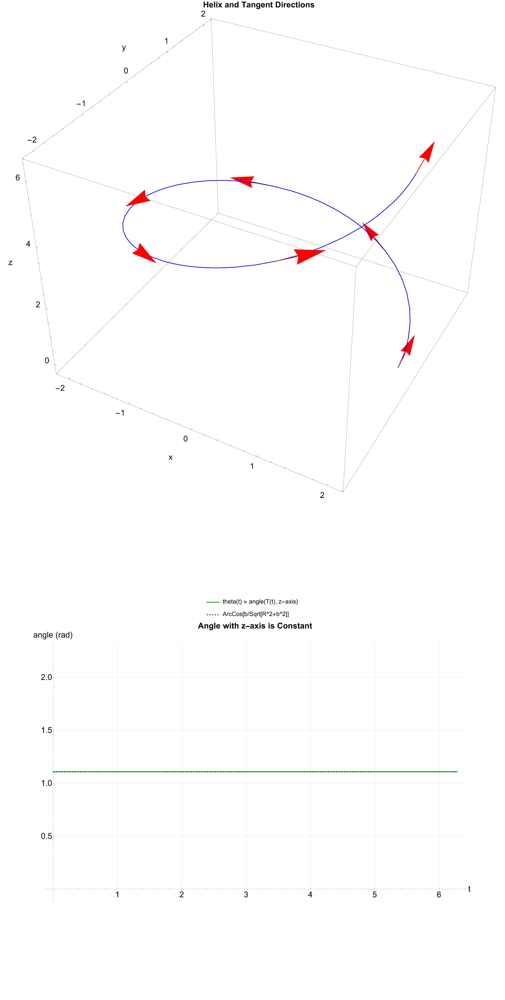
Photo Problem 3: Dot-Product Derivative Rule
Problem statement (from the photo): Let \(\mathbf{a}=\mathbf{a}(t)\) and \(\mathbf{b}=\mathbf{b}(t)\) be differentiable vector-valued functions on \((\alpha,\beta)\). Prove
\[ \frac{d}{dt}\big(\mathbf{a}(t)\cdot\mathbf{b}(t)\big) = \mathbf{a}'(t)\cdot\mathbf{b}(t) + \mathbf{a}(t)\cdot\mathbf{b}'(t). \]
Solution
Write the vectors in components:
\[ \mathbf{a}(t)=\langle a_1(t),a_2(t),a_3(t)\rangle, \qquad \mathbf{b}(t)=\langle b_1(t),b_2(t),b_3(t)\rangle. \]
Then
\[ \mathbf{a}(t)\cdot\mathbf{b}(t)=a_1(t)b_1(t)+a_2(t)b_2(t)+a_3(t)b_3(t). \]
Differentiate term by term and apply the one-variable product rule to each product:
\[ \frac{d}{dt}\big(\mathbf{a}(t)\cdot\mathbf{b}(t)\big) =\sum_{i=1}^3 \frac{d}{dt}\big(a_i(t)b_i(t)\big) =\sum_{i=1}^3\big(a_i'(t)b_i(t)+a_i(t)b_i'(t)\big). \]
Group the terms:
\[ \sum_{i=1}^3 a_i'(t)b_i(t)+\sum_{i=1}^3 a_i(t)b_i'(t) =\mathbf{a}'(t)\cdot\mathbf{b}(t)+\mathbf{a}(t)\cdot\mathbf{b}'(t). \]
This proves the identity.
Mathematica Visual Check
For a concrete example, let
\[ \mathbf{a}(t)=\langle\cos t,\sin(2t),t/2\rangle, \qquad \mathbf{b}(t)=\langle t^2,e^{-t/3},\sin t\rangle. \]
The Mathematica plot below overlays \(\dfrac{d}{dt}(\mathbf{a}\cdot\mathbf{b})\) and \(\mathbf{a}'\cdot\mathbf{b}+\mathbf{a}\cdot\mathbf{b}'\), and also shows their difference. The two curves coincide, and the difference stays at zero (up to numerical precision).
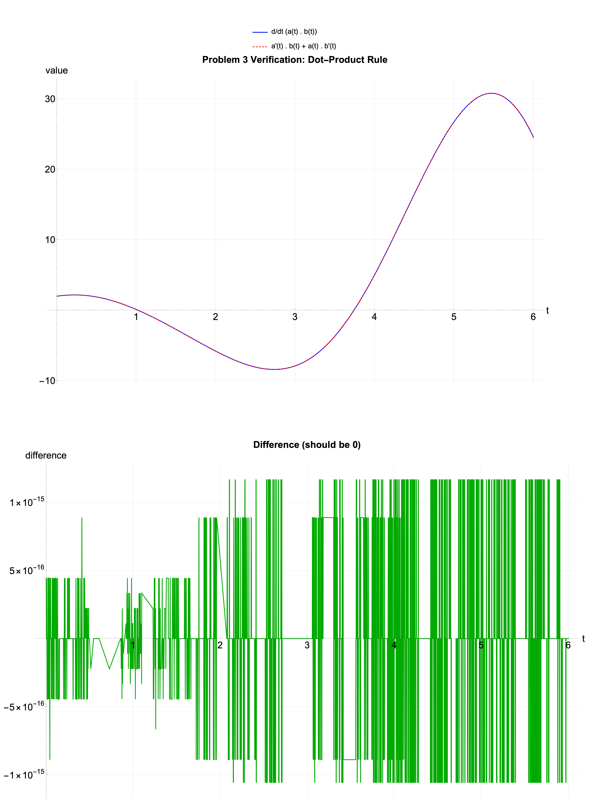